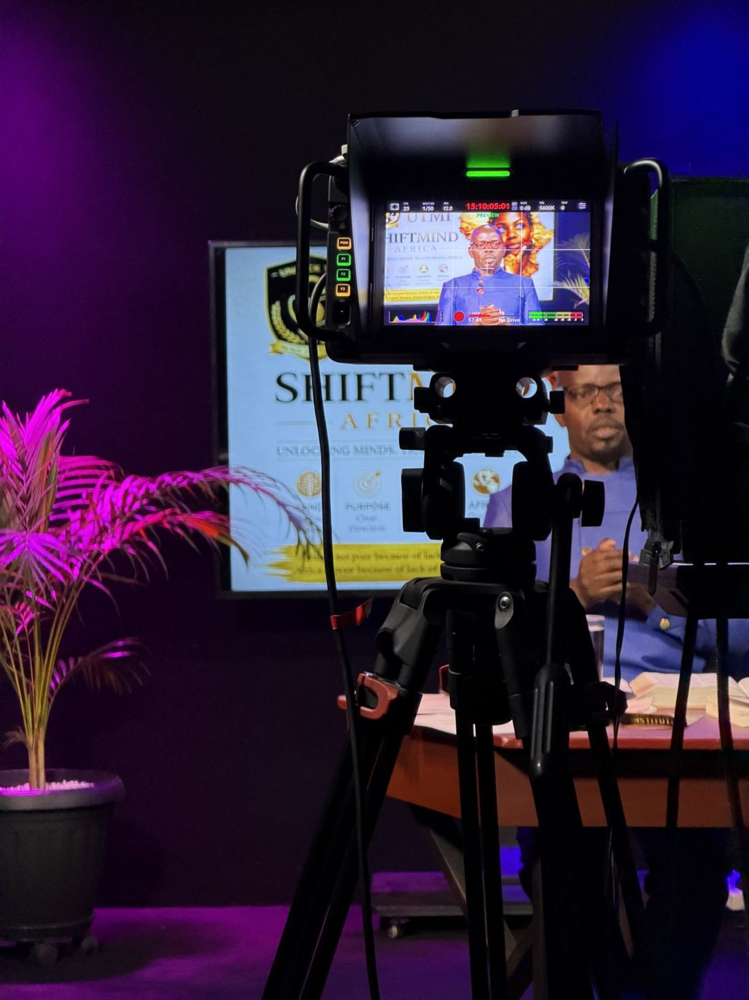
Livestreaming
Multi-camera event coverage and broadcast support.
Weddings · portraits · film
Photography and film that hold the quiet gestures, the laughter and the day exactly as it felt.
Lead with the three growth services, then introduce the full service range.

Multi-camera event coverage and broadcast support.
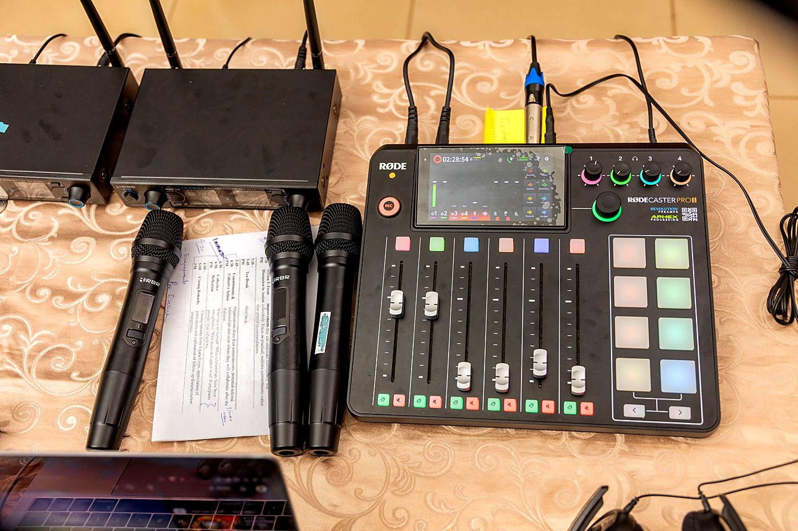
Audio support for indoor and outdoor events.
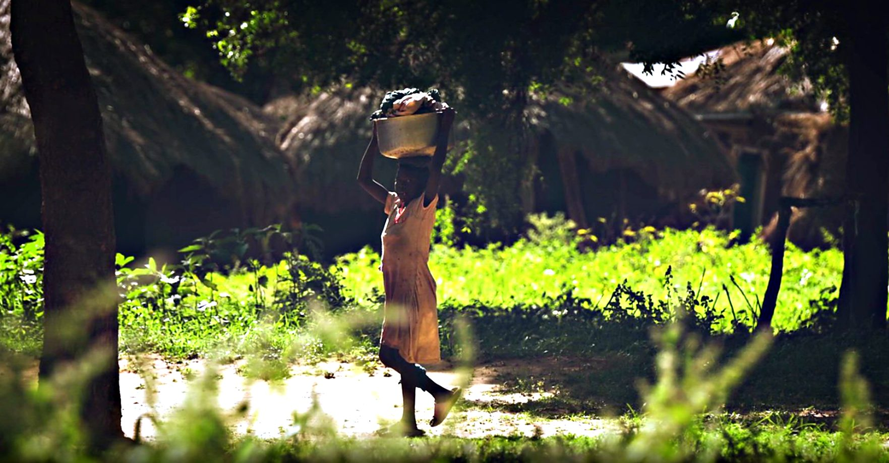
Story-led filming and post-production.
Also: photography · videography · podcast · event coverage · 65” TV display hire
Use only projects with confirmed client and participant permissions.
Wedding · Portraits
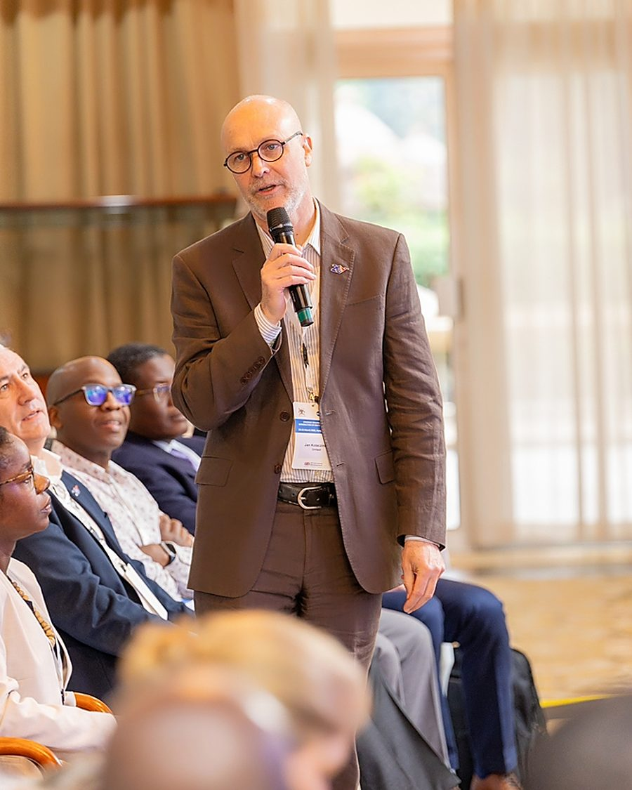
Conferences · Photography
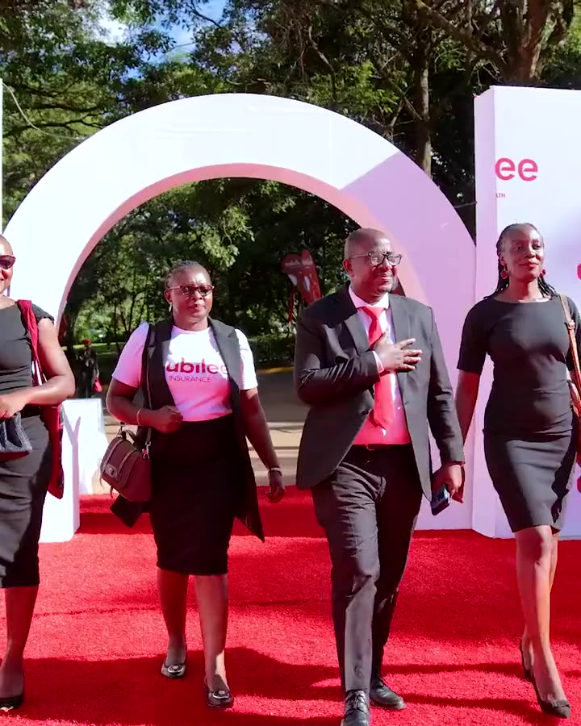
Corporate event · Highlights film
Official events · Photography
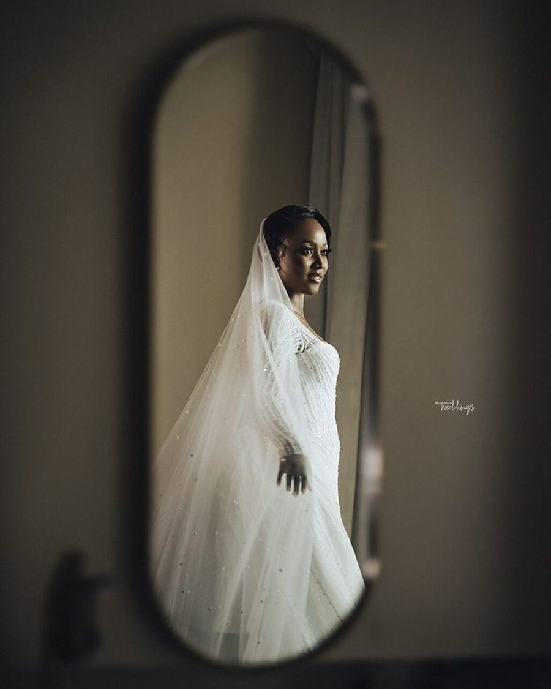
Wedding · Portraits
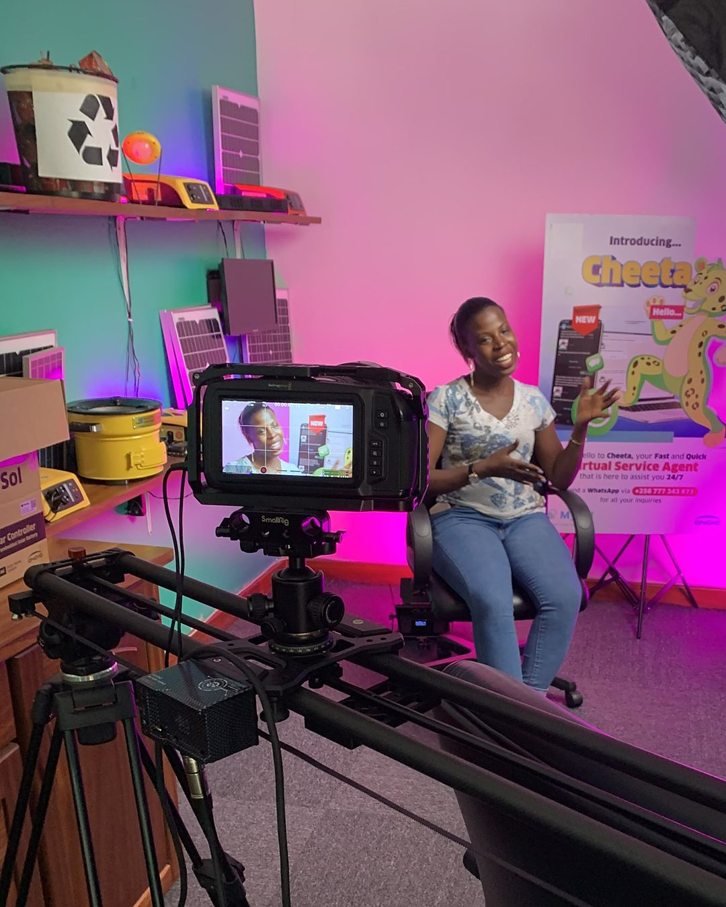
Studio · Video production

Documentary · Storytelling

Event coverage · Photography

Wedding · Photography · Film

Documentary · Film
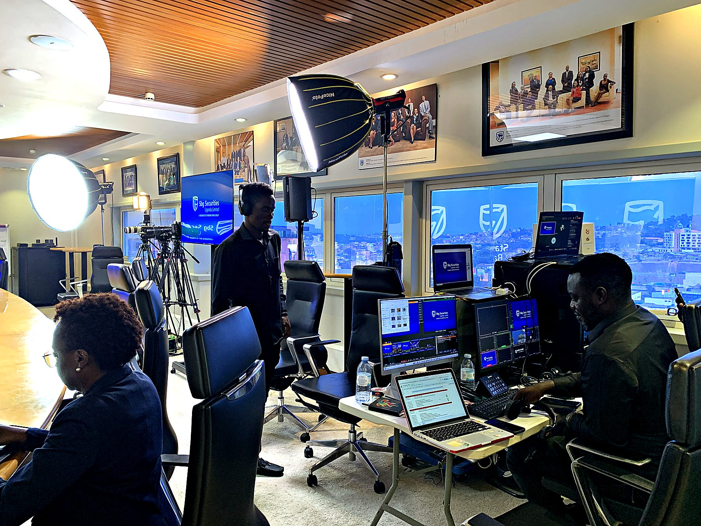
Sembule Media · Kampala, Uganda
Since 2022, Sembule Media has brought live video, streaming, sound, photography and film together—from conferences and weddings to documentary stories across Uganda.
Get to know SembuleA few of the organizations and teams we’ve worked with.
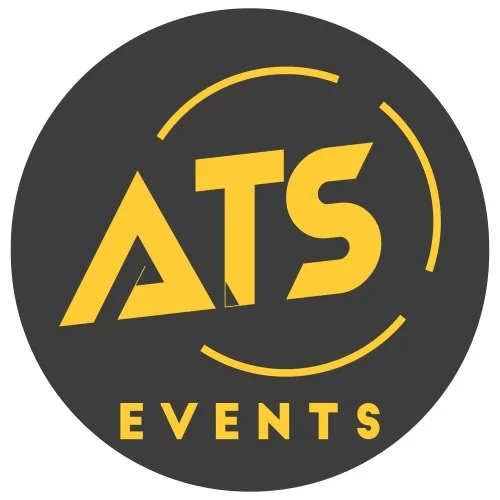
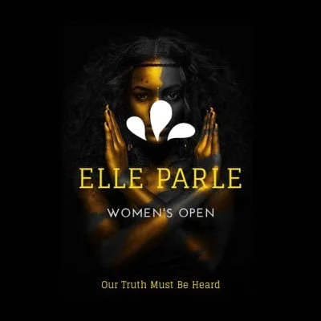
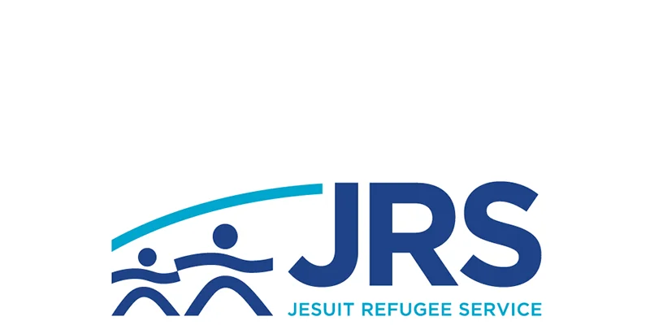
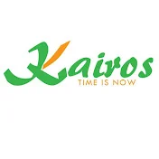
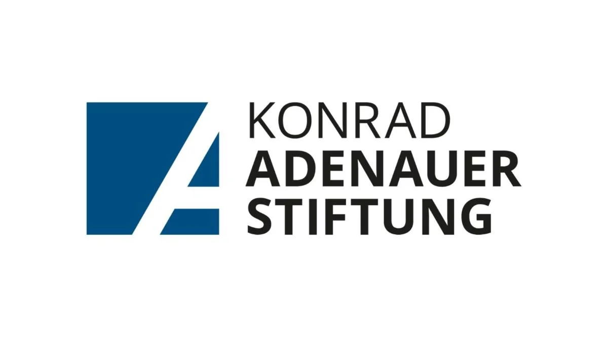
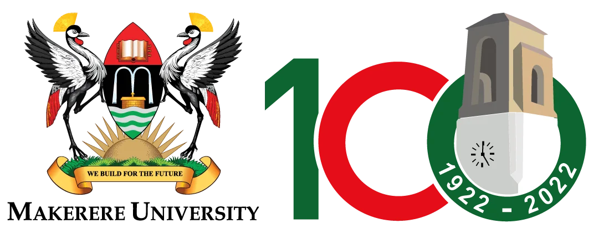
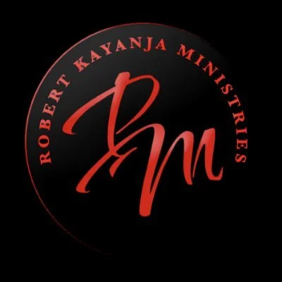
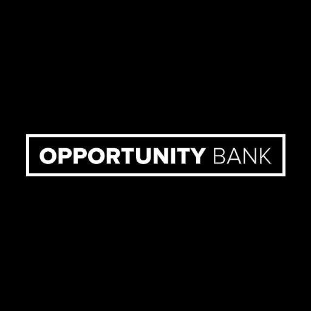
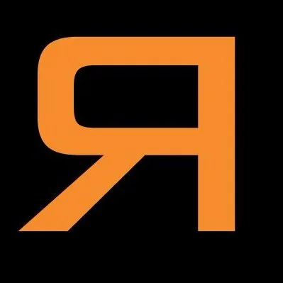
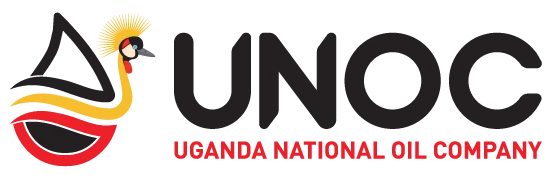
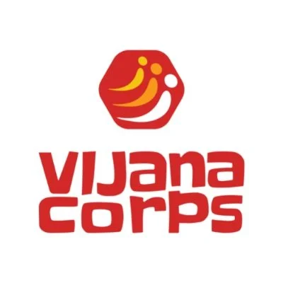
Corporate event · client role and organization to confirm
Approved client testimonial copy will appear here.
Tell us the date, service, location and audience size.